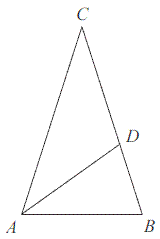
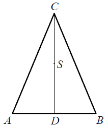
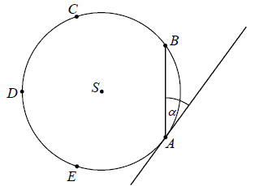
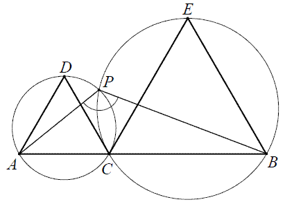
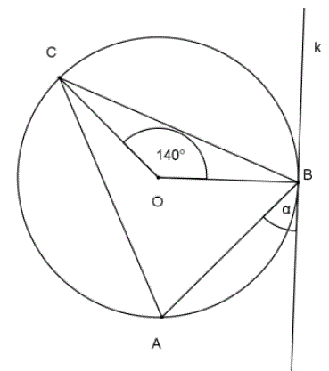
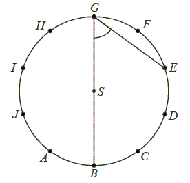
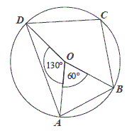
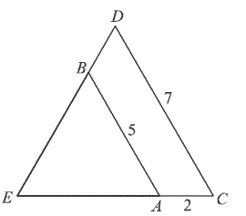
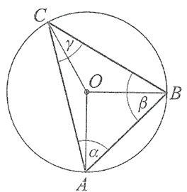

Jesteś tutaj: Kurs
zadaniowy do starej matury → Matura podstawowa z matematyki - kurs -
geometria płaska
Matura podstawowa z matematyki - kurs - geometria płaska
Pole koła wpisanego w trójkąt równoboczny jest równe \(\frac{16}{3}\pi \). Obwód
tego trójkąta jest równy:
A.\( 12\sqrt{3} \)
B.\( 24 \)
C.\( 12 \)
D.\( 36 \)
B
Pole koła opisanego na trójkącie równobocznym o wysokości \(9\) jest równe
A.\(36\pi \)
B.\(9\pi \)
C.\(18\sqrt{3}\pi \)
D.\(12\pi \)
A
Obwód trójkąta równobocznego o polu \( \sqrt{3} \) jest równy:
A.\(1 \)
B.\(3 \)
C.\(6 \)
D.\(2 \)
C
Promień okręgu opisanego na trójkącie równobocznym jest równy \( 8 \). Wysokość
tego trójkąta jest równa
A.\(4\sqrt{3} \)
B.\(8\sqrt{3} \)
C.\(12 \)
D.\(6 \)
C
Długość boku trójkąta równobocznego jest równa \(24\sqrt{3}\). Promień okręgu
wpisanego w ten trójkąt jest równy
A.\( 36 \)
B.\( 18 \)
C.\( 12 \)
D.\( 6 \)
C
Okrąg opisany na trójkącie równobocznym ma promień \(12\). Wysokość tego trójkąta
jest równa
A.\( 18 \)
B.\( 20 \)
C.\( 22 \)
D.\( 24 \)
A
Promień okręgu opisanego na trójkącie równobocznym jest równy \(
\frac{16\sqrt{3}}{3} \). Obwód tego trójkąta jest równy
A.\(16\)
B.\(32\)
C.\(48\)
D.\(64\)
C
Pole koła opisanego na trójkącie równobocznym o wysokości \(9\) jest równe
A.\( 36\pi \)
B.\( 9\pi \)
C.\( 18\sqrt{3}\pi \)
D.\( 12\pi \)
A
W trójkącie równobocznym \(ABC\) dana jest wysokość \(|CD|=3\). Średnica okręgu
opisanego na tym trójkącie ma długość:
A.\( 4 \)
B.\( \frac{2\sqrt{3}}{3} \)
C.\( \frac{4\sqrt{3}}{3} \)
D.\( 2 \)
A
Dany jest trójkąt prostokątny o przyprostokątnych \(5\) i \(12\). Promień okręgu
opisanego na tym trójkącie jest równy
A.\( 12 \)
B.\( 8{,}5 \)
C.\( 6{,}5 \)
D.\( 5 \)
C
Punkt \(D\) leży na boku BC trójkąta równoramiennego \(ABC\), w którym \(|AC| =
|BC|\). Odcinek \(AD \) dzieli trójkąt \(ABC\) na dwa trójkąty równoramienne w taki sposób, że
\(|AB| = |AD| = |CD|\). Oblicz miary kątów trójkąta \(ABC\). 
\(72^\circ \), \(72^\circ \), \(36^\circ \)
W trójkącie prostokątnym dwa dłuższe boki mają długości \(\sqrt{5}\) i \(3\). Obwód
tego trójkąta jest równy
A.\( 5+\sqrt{5} \)
B.\( 5\sqrt{5} \)
C.\( 5+2\sqrt{5} \)
D.\( \sqrt{30} \)
A
W trójkącie równoramiennym \( ABC \) dane są \( |AC|=|BC|=5 \) oraz wysokość \(
|CD|=2 \). Podstawa \( AB \) tego trójkąta ma długość
A.\(6 \)
B.\(2\sqrt{21} \)
C.\(2\sqrt{29} \)
D.\(14 \)
B
W trójkącie prostokątnym dwa dłuższe boki mają długości \(5\) i \(7\). Obwód tego
trójkąta jest równy
A.\(16\sqrt{6} \)
B.\(14\sqrt{6} \)
C.\(12+4\sqrt{6} \)
D.\(12+2\sqrt{6} \)
D
Oblicz pole trójkąta równoramiennego \(ABC\), w którym \(|AB| = 24\) i \(|AC| = |BC| = 13\).
\(60\)
Liczby \(4, 10, c\) są długościami boków trójkąta
równoramiennego. Oblicz \(c\).
\(c=10\)
Liczby \(6, 10, c\) są długościami boków trójkąta
równoramiennego. Oblicz \(c\).
\(c=6\) lub \(c=10\)
Liczby \(6, 10, c\) są długościami boków trójkąta
prostokątnego. Oblicz \(c\).
\(c=2\sqrt{34}\) lub \(c=8\)
Liczby \(x - 1, x, 5\) są długościami boków trójkąta
równoramiennego. Oblicz \(x\).
\(x=5\) lub \(x=6\)
Punkt \(S\) jest środkiem wysokości \(CD\) trójkąta równoramiennego \(ABC\), w
którym \(|AC|=|BC|=5\) oraz \(|CD|=4\) (zobacz rysunek).  Odległość punktu \(S\) od ramienia tego trójkąta jest równa
A.\( \frac{6}{5} \)
B.\( \frac{3}{2} \)
C.\( \frac{12}{5} \)
D.\( \frac{5}{2} \)
A
W trójkącie równoramiennym \(ABC\) o wysokościach \(CD\) i \(AE\) podstawa \(AB\)
ma długość \(8\) cm, a odcinek \(BE\) ma długość \(3\) cm.  Długość odcinka \(AC\) jest równa:
Długość odcinka \(AC\) jest równa:
Długość odcinka \(AC\) jest równa: A.\( 6 \) cm
B.\( \frac{32}{3} \) cm
C.\( \frac{28}{3} \) cm
D.\( \frac{33}{2} \) cm
B
Długość odcinka \(BD\) w trójkącie prostokątnym \(ABC\) jest równa: 
A.\( \frac{9\sqrt{3}}{4} \)
B.\( 4 \)
C.\( 4\sqrt{3} \)
D.\( 4\sqrt{2} \)
B
Obwód czworokąta wypukłego \(ABCD\) jest równy \(50\) cm.
Obwód trójkąta \(ABD\) jest równy \(46\) cm, a obwód trójkąta \(BCD\) jest
równy \(36\) cm. Oblicz długość przekątnej \(BD\).
\(|BD|=16\)
W trapezie równoramiennym, który nie jest równoległobokiem, kąty przy ramieniu
różnią się o \(50^\circ \). Kąt przy krótszej podstawie tego trapezu jest równy
A.\(115^\circ \)
B.\(120^\circ \)
C.\(125^\circ \)
D.\(130^\circ \)
A
W trapezie miary kątów ostrych są równe \(30^\circ \) i \(60^\circ \). Wówczas
stosunek długości krótszego ramienia do dłuższego jest równy:
A.\( \frac{\sqrt{3}}{3} \)
B.\( \frac{1}{3} \)
C.\( \frac{\sqrt{2}}{2} \)
D.\( \frac{1}{2} \)
A
Rysunek przedstawia trapez prostokątny i długości trzech jego boków.  Obwód tego trapezu jest równy
Obwód tego trapezu jest równy
Obwód tego trapezu jest równy A.\( 43 \)
B.\( 46 \)
C.\( 48 \)
D.\( 50 \)
B
Różnica miar kątów wewnętrznych przy ramieniu trapezu równoramiennego, który nie
jest równoległobokiem, jest równa \( 40^\circ \). Miara kąta przy krótszej podstawie jest równa.
A.\(120^\circ \)
B.\(110^\circ \)
C.\(80^\circ \)
D.\(70^\circ \)
B
Trapez jest prostokątny. Trójkąty podobne \(ABD\) i \(CBD\) są równoramienne.  Obwód trapezu jest równy
Obwód trapezu jest równy
Obwód trapezu jest równy A.\( 4+2\sqrt{2} \)
B.\( 2\sqrt{2} \)
C.\( 4+\sqrt{2} \)
D.\( 4 \)
C
Podstawy trapezu prostokątnego mają długości \(6\) i \(10\) oraz tangens jego kąta
ostrego jest równy \(3\). Oblicz pole tego trapezu.
\(P=96\)
W trapezie prostokątnym krótsza przekątna dzieli go na trójkąt prostokątny i
trójkąt równoboczny. Dłuższa podstawa trapezu jest równa \(6\). Oblicz obwód tego trapezu.
\(Obw = 15+3\sqrt{3}\)
Podstawy trapezu równoramiennego mają długości 5 i 13 oraz tangens kąta ostrego
jest równy 2. Oblicz pole tego trapezu.
\(P=72\)
Podstawy trapezu prostokątnego mają długości \(6\) i \(10\) oraz tangens kąta
ostrego jest równy \(3\). Oblicz pole tego trapezu.
\(P=96\)
W trapezie prostokątnym kąt ostry ma miarę \( 60^\circ \), a podstawy mają długość
\(6\) i \(9\). Wysokość tego trapezu jest równa
A.\(6 \)
B.\(2\sqrt{3} \)
C.\(3\sqrt{3} \)
D.\(\frac{3\sqrt{3}}{2} \)
C
Wysokość trapezu równoramiennego o kącie ostrym \( 60^\circ \) i ramieniu długości
\( 2\sqrt{3} \) jest równa
A.\(\sqrt{3} \)
B.\(3 \)
C.\(3\sqrt{3} \)
D.\(2 \)
B
W równoległoboku kąt rozwarty jest cztery razy większy od kąta ostrego \(\alpha\).
Zatem:
A.\( \alpha=36^\circ \)
B.\( \alpha=45^\circ \)
C.\( \alpha=60^\circ \)
D.\( \alpha=72^\circ \)
A
Różnica miar dwóch sąsiednich kątów wewnętrznych równoległoboku jest równa
\(30^\circ\). Kąt rozwarty tego równoległoboku jest równy
A.\( 105^\circ \)
B.\( 115^\circ \)
C.\( 125^\circ \)
D.\( 135^\circ \)
A
Przekątna równoległoboku ma długość \(10\) cm i tworzy z krótszym bokiem kąt
prosty, a z dłuższym bokiem kąt \(30^\circ\). Oblicz długość krótszego boku tego równoległoboku.
\(\frac{10\sqrt{3}}{3}\)
Pole równoległoboku o bokach długości \(4\) i \(12\) oraz kącie ostrym \(30^\circ\)
jest równe
A.\( 24 \)
B.\( 12\sqrt{3} \)
C.\( 12 \)
D.\( 6\sqrt{3} \)
A
W rombie bok i krótsza przekątna mają taką samą długość, równą \(a\). Wówczas
dłuższa przekątna ma długość:
A.\( a\sqrt{2} \)
B.\( a\sqrt{3} \)
C.\( 2a \)
D.\( \frac{a\sqrt{3}}{2} \)
B
Bok rombu ma długość \(8\), a kąt ostry ma miarę \(60^\circ \). Wysokość tego rombu
jest więc równa 
A.\( 2\sqrt{3} \)
B.\( 4\sqrt{3} \)
C.\( 6\sqrt{3} \)
D.\( 8\sqrt{3} \)
B
Dany jest romb o boku długości \(4\) i kącie ostrym \(60^\circ\). Pole tego rombu
jest równe
A.\( 16\sqrt{3} \)
B.\( 16 \)
C.\( 8\sqrt{3} \)
D.\( 8 \)
C
Dany jest romb, którego kąt ostry ma miarę \(45^\circ\), a jego pole jest równe
\(50\sqrt{2}\). Oblicz wysokość tego rombu.
\(h=5\sqrt{2}\)
Długość promienia \(r\) okręgu opisanego na kwadracie jest równa \(2\sqrt{3}\).
Długość boku tego kwadratu ma wartość:
A.\( 4\sqrt{3} \)
B.\( 2\sqrt{6} \)
C.\( 4\sqrt{6} \)
D.\( 2\sqrt{5} \)
B
Na dwóch przeciwległych bokach kwadratu o polu \(P\) zaznaczono punkty \(A\) i
\(B\), przy czym punkt \(A\) jest środkiem boku, zaś punkt \(B\) dzieli bok w stosunku \(3:1\), jak
na rysunku obok. Pole zamalowanego czworokąta jest równe: 
A.\( \frac{2P}{3} \)
B.\( \frac{5P}{8} \)
C.\( \frac{3P}{4} \)
D.\( \frac{3P}{5} \)
B
Obwód kwadratu wpisanego w okrąg o promieniu \(11\sqrt{2}\) jest równy
A.\( 22 \)
B.\( 44 \)
C.\( 88 \)
D.\( 121\sqrt{2} \)
C
Okrąg opisany na kwadracie ma promień \(4\). Długość boku tego kwadratu jest równa
A.\( 4\sqrt{2} \)
B.\( 2\sqrt{2} \)
C.\( 8 \)
D.\( 4 \)
A
Pole kwadratu wpisanego w okrąg o promieniu \( 5 \) jest równe
A.\(25 \)
B.\(50 \)
C.\(75 \)
D.\(100 \)
B
Pole kwadratu wpisanego w okrąg o promieniu \( 4 \) cm jest równe
A.\(64\) cm2
B.\(32\) cm2
C.\(16\) cm2
D.\(8\) cm2
B
Czworokąty \(ABCD\) i \(APQR\) są kwadratami. Udowodnij, że \(|BP| = |DR|\). 
Średnice \(AB\) i \(CD\) okręgu o środku \(S\) przecinają się pod kątem
\(50^\circ\) (tak jak na rysunku).  Miara kąta \(\alpha \) jest równa
Miara kąta \(\alpha \) jest równa
Miara kąta \(\alpha \) jest równa A.\( 25^\circ \)
B.\( 30^\circ \)
C.\( 40^\circ \)
D.\( 50^\circ \)
A
Wierzchołki trójkąta \(ABC\) leżą na okręgu i środek \(O\) okręgu leży wewnątrz
trójkąta. Jeśli kąt \(ABO\) ma miarę \(20^\circ\), to kąt \(ACB\) ma miarę:
A.\( 70^\circ \)
B.\( 40^\circ \)
C.\( 20^\circ \)
D.\( 10^\circ \)
A
Punkty \(A\) i \(B\) należą do okręgu o środku w punkcie \(O\) i promieniu \(3\).
Wiadomo, że \(|\sphericalangle AOB|=150^\circ \). Cięciwa \(AB\) dzieli okrąg na dwa łuki, z których
większy ma długość:
A.\( 2{,}5\pi \)
B.\( 3{,}5\pi \)
C.\( 3{,}75\pi \)
D.\( 5{,}25\pi \)
B
Cięciwa okręgu ma długość \(8\) cm i jest oddalona od jego środka o \(3\) cm.
Promień tego okręgu ma długość
A.\( 3 \) cm
B.\( 4 \) cm
C.\( 5 \) cm
D.\( 8 \) cm
C
Punkty \(A, B, C, D\) i \(E\) leżą na okręgu o środku \(S\) i dzielą ten okrąg na
pięć łuków równej długości (zobacz rysunek).  Wówczas miara kąta ostrego \(\alpha \) między cięciwą \(AB\) i styczną do tego okręgu
w punkcie \(A\) jest równa
A.\( \alpha =18^\circ \)
B.\( \alpha =30^\circ \)
C.\( \alpha =36^\circ \)
D.\( \alpha =54^\circ \)
C
Dane są dwa okręgi o promieniach \(12\) i \(17\). Mniejszy okrąg przechodzi przez
środek większego okręgu. Odległość między środkami tych okręgów jest równa
A.\( 5 \)
B.\( 12 \)
C.\( 17 \)
D.\( 29 \)
B
Punkty \( A=(-1,3)\) i \(C=(7,9) \) są przeciwległymi
wierzchołkami prostokąta \( ABCD \). Promień okręgu opisanego na tym prostokącie jest równy
A.\(10 \)
B.\(6\sqrt{2} \)
C.\(5 \)
D.\(3\sqrt{2} \)
C
Na odcinku \(AB\) wybrano punkt \(C\), a następnie zbudowano trójkąty równoboczne
\(ACD\) i \(CBE\) tak, że wierzchołki \(D\) i \(E\) leżą po tej samej stronie prostej \(AB\). Okręgi
opisane na tych trójkątach przecinają się w punktach \(C\) i \(P\) (zobacz rysunek).  Udowodnij, że miara kąta \(APB\) jest
równa \(120^\circ \).
Oblicz kąt \(\alpha \) między cięciwą \(PQ\), a styczną do okręgu w punkcie \(P\).

\(\alpha =65^\circ \)
W czworokącie \(OBMA\) kąty wewnętrzne \(AOB\) i \(AMB\) mają równe miary.  Wówczas kąt \(\alpha \) ma miarę:
Wówczas kąt \(\alpha \) ma miarę:
Wówczas kąt \(\alpha \) ma miarę:
A.\( 160^\circ \)
B.\( 120^\circ \)
C.\( 240^\circ \)
D.\( 210^\circ \)
C
Dwa okręgi są styczne zewnętrznie. Odległość ich środków jest równa \(8\) cm. Gdyby
te okręgi były styczne wewnętrznie, to odległość ich środków byłaby równa \(2\) cm. Oblicz długości
promieni tych okręgów.
\(r_1=5\), \(r_2=3\)
Miara kąta \( \alpha \), zaznaczonego na rysunku, jest równa 
A.\(35^\circ \)
B.\(55^\circ \)
C.\(70^\circ \)
D.\(110^\circ \)
B
Na trójkącie równoramiennym \( ABC \), w którym \( \vert{AC}\vert=\vert{BC}\vert \)
opisano okrąg o środku \( O \). Prosta \( k \) jest styczna do tego okręgu w punkcie \( B \) i \(
\vert{\sphericalangle BOC}\vert=140^\circ \).  Kąt \( \alpha \) ma miarę
A.\(70^\circ \)
B.\(40^\circ \)
C.\(90^\circ \)
D.\(50^\circ \)
B
Odcinki \(AB\) i \(CD\) są równoległe, trójkąt \(ABE\) jest równoboczny i
\(|AB|=5\) oraz \(|BD|=2\) (zobacz rysunek).  Obwód czworokąta \(ACDB\) wynosi:
Obwód czworokąta \(ACDB\) wynosi:
Obwód czworokąta \(ACDB\) wynosi: A.\( 12 \)
B.\( 14 \)
C.\( 16 \)
D.\( 18 \)
C
Proste \(AD\) i \(BC\) są równoległe. Długości odcinków \(ED\), \(DC\) oraz \(AB\)
podane są na rysunku. Długość odcinka \(EA\) jest równa 
A.\( 4 \)
B.\( 8 \)
C.\( 9 \)
D.\( 10 \)
B
Odcinki \( BC\) i \(DE \) są równoległe. Długości odcinków \( AC, CE \) i \( BC \) są podane na rysunku. Długość odcinka \( DE \) jest równa 
A.\(6 \)
B.\(8 \)
C.\(10 \)
D.\(12 \)
C
Długość odcinka \( AB \), równoległego do odcinka \( CD \), jest równa 
A.\( 6 \)
B.\( 3 \)
C.\( 2 \)
D.\( 4 \)
D
Jeżeli trójkąty \( ABC \) i \( A'B'C' \) są podobne, a ich pola są, odpowiednio,
równe \( 25 \) cm2 i \( 50 \) cm2, to skala podobieństwa \( \frac{A'B'}{AB} \)
jest równa
A.\(2 \)
B.\(\frac{1}{2} \)
C.\(\sqrt{2} \)
D.\(\frac{\sqrt{2}}{2} \)
C
Odcinki \( BC \) i \( DE \) są równoległe i \( |AE|=4 \), \( |DE|=3 \) (zobacz
rysunek). Punkt \( D \) jest środkiem odcinka \( AB \). Długość odcinka \( BC \) jest równa 
A.\(4 \)
B.\(6 \)
C.\(8 \)
D.\(16 \)
B
Punkty \(A, B, C, D, E, F, G, H, I, J\) dzielą okrąg o środku \(S\) na dziesięć
równych łuków. Oblicz miarę kąta wpisanego \(BGE\) zaznaczonego na rysunku. 
A.\( 54^\circ \)
B.\( 72^\circ \)
C.\( 60^\circ \)
D.\( 45^\circ \)
A
Punkty \(A\), \(B\) i \(C\) leżą na okręgu o środku \(S\) (zobacz rysunek). Miara
zaznaczonego kąta wpisanego \(ACB\) jest równa 
A.\( 65^\circ \)
B.\( 100^\circ \)
C.\( 115^\circ \)
D.\( 130^\circ \)
C
Punkt \(O\) jest środkiem okręgu. Kąt wpisany \(BAD\) ma miarę 
A.\( 150^\circ \)
B.\( 120^\circ \)
C.\( 115^\circ \)
D.\( 85^\circ \)
D
Miara zaznaczonego na rysunku kąta \(\alpha \) jest równa 
A.\( 50^\circ \)
B.\( 60^\circ \)
C.\( 100^\circ \)
D.\( 130^\circ \)
A
Punkty \(A, B, C\) leżące na okręgu o środku \(S\) są wierzchołkami trójkąta
równobocznego.  Miara zaznaczonego na
rysunku kąta środkowego \(ASB\) jest równa
Miara zaznaczonego na
rysunku kąta środkowego \(ASB\) jest równa
Miara zaznaczonego na
rysunku kąta środkowego \(ASB\) jest równa A.\( 120^\circ \)
B.\( 90^\circ \)
C.\( 60^\circ \)
D.\( 30^\circ \)
A
Punkty \(A, B, C, D\) dzielą okrąg na \(4\) równe łuki. Miara zaznaczonego na
rysunku kąta wpisanego \(ACD\) jest równa 
A.\( 90^\circ \)
B.\( 60^\circ \)
C.\( 45^\circ \)
D.\( 30^\circ \)
C
Kąt między cięciwą \( AB \) a styczną do okręgu w punkcie \( A \) ma miarę \(
\alpha =62^\circ \). Wówczas: 
A.\(\beta =118^\circ \)
B.\(\beta =124^\circ \)
C.\(\beta =138^\circ \)
D.\(\beta =152^\circ \)
B
Kąt środkowy i kąt wpisany są oparte na tym samym łuku. Suma ich miar jest równa \(
180^\circ \). Jaka jest miara kąta środkowego?
A.\(60^\circ \)
B.\(90^\circ \)
C.\(120^\circ \)
D.\(135^\circ \)
C
Punkty \(A\) i \(B\) leżą na okręgu o środku \(O\) i dzielą ten okrąg na dwa łuki,
których stosunek długości jest równy \(7:5\). Oblicz miarę kąta środkowego opartego na krótszym
łuku. 
\(150^\circ \)
Punkt \(O\) jest środkiem okręgu o średnicy \(AB\) (tak
jak na rysunku). Kąt \(\alpha \) ma miarę 
A.\( 40^\circ \)
B.\( 50^\circ \)
C.\( 60^\circ \)
D.\( 80^\circ \)
B
Kąt środkowy oparty na łuku, którego długość jest równa \( \frac{4}{9} \) długości
okręgu, ma miarę
A.\(160^\circ \)
B.\(80^\circ \)
C.\(40^\circ \)
D.\(20^\circ \)
A
Punkty \( A \), \( B \) i \( C \) leżą na okręgu o środku \( O \) (zobacz rysunek).
Zaznaczony na rysunku wypukły kąt środkowy \( AOB \) ma miarę 
A.\(60^\circ \)
B.\(100^\circ \)
C.\(120^\circ \)
D.\(140^\circ \)
C
Liczba przekątnych siedmiokąta foremnego jest równa
A.\( 7 \)
B.\( 14 \)
C.\( 21 \)
D.\( 28 \)
B
Podstawa trójkąta równoramiennego ma długość \(6\), a ramię ma długość \(5\).
Wysokość opuszczona na podstawę ma długość
A.\( 3 \)
B.\( 4 \)
C.\( \sqrt{34} \)
D.\( \sqrt{61} \)
B
Odcinki \(AB\) i \(DE\) są równoległe. Długości odcinków \(CD, DE\) i \(AB\) są
odpowiednio równe \(1\), \(3\) i \(9\). Długość odcinka \(AD\) jest równa 
A.\( 2 \)
B.\( 3 \)
C.\( 5 \)
D.\( 6 \)
A
Latawiec ma wymiary podane na rysunku.  Powierzchnia zacieniowanego trójkąta jest równa
Powierzchnia zacieniowanego trójkąta jest równa
Powierzchnia zacieniowanego trójkąta jest równa A.\( 3200 \) cm2
B.\( 6400 \) cm2
C.\( 1600 \) cm2
D.\( 800 \) cm2
C
Odcinki \(AB\) i \(CD\) są równoległe i \( |AB|=5, |AC|=2, |CD|=7 \) (zobacz
rysunek). Długość odcinka \( AE \) jest równa 
A.\(\frac{10}{7} \)
B.\(\frac{14}{5} \)
C.\(3 \)
D.\(5 \)
D
Pole prostokąta jest równe \(40\). Stosunek długości jego boków jest równy \(2:5\).
Dłuższy bok tego prostokąta jest równy
A.\( 10 \)
B.\( 8 \)
C.\( 7 \)
D.\( 6 \)
A
Z prostokąta \(ABCD\) o obwodzie \(30\) wycięto trójkąt równoboczny \(AOD\) o
obwodzie \(15\) (tak jak na rysunku). Obwód zacieniowanej figury jest równy 
A.\( 25 \)
B.\( 30 \)
C.\( 35 \)
D.\( 40 \)
C
Punkt \(S\) jest środkiem okręgu opisanego na trójkącie ostrokątnym \(ABC\). Kąt
\(ACS\) jest trzy razy większy od kąta \(BAS\), a kąt \(CBS\) jest dwa razy większy od kąta \(BAS\).
Oblicz kąty trójkąta \(ABC\). 
\(45^\circ , 60^\circ , 75^\circ \)
Najdłuższa przekątna sześciokąta foremnego ma długość \(8\). Wówczas pole koła
opisanego na tym sześciokącie jest równe
A.\( 4\pi \)
B.\( 8\pi \)
C.\( 16\pi \)
D.\( 64\pi \)
C
Proste \( k \) i \( l \) są równoległe.  Miara kąta \( \alpha \) wynosi:
Miara kąta \( \alpha \) wynosi:
Miara kąta \( \alpha \) wynosi: A.\(60^\circ \)
B.\(65^\circ \)
C.\(35^\circ \)
D.\(70^\circ \)
B
Oblicz długość odcinka \( x \) zaznaczonego na rysunku. 
\(x=\sqrt{113}\)
Punkty \(A\), \(B\) i \(C\) okręgu dzielą ten okrąg na trzy łuki, których długości
pozostają w stosunku \(\overset{\frown}{|AB|}:\overset{\frown}{|BC|}:\overset{\frown}{|AC|}=3:4:5\).
Oblicz miary kątów \(\alpha\), \(\beta\), \(\gamma\) trójkąta \(ABC\). 
\(\alpha =60^\circ \), \(\beta =75^\circ \), \(\gamma =45^\circ \)
Trójkąty prostokątne \(ABC\) i \(DEF\) są podobne. Przyprostokątne trójkąta \(ABC\)
mają długości \(5\) i \(12\), a przeciwprostokątna trójkąta\(DEF\) ma długość \(26\). Wyznacz pole
trójkąta \(DEF\).
\(P=120\)
Okrąg wpisany w trójkąt prostokątny \(ABC\) jest styczny do przeciwprostokątnej
\(AB\) w punkcie \(K\). Wiadomo, że \(|AK| = 4\) i \(|KB| = 6\). Oblicz promień tego okręgu. 
\(r=2\)
Kąt \( CAB \) trójkąta prostokątnego \( ACB \) ma miarę \( 30^\circ \). Pole
kwadratu \( DEFG \), wpisanego w ten trójkąt (zobacz rysunek), jest równe \( 4 \). Oblicz pole
trójkąta \( ACB \). 
\(P=4+\frac{19\sqrt{3}}{6}\)
Promień okręgu opisanego na trójkącie prostokątnym jest równy \(2\sqrt{5}\). Jedna
z przyprostokątnych tego trójkąta jest o \(4\) dłuższa od drugiej przyprostokątnej. Oblicz wysokość
tego trójkąta opuszczoną na przeciwprostokątną.
\(h=\frac{8\sqrt{5}}{5}\)